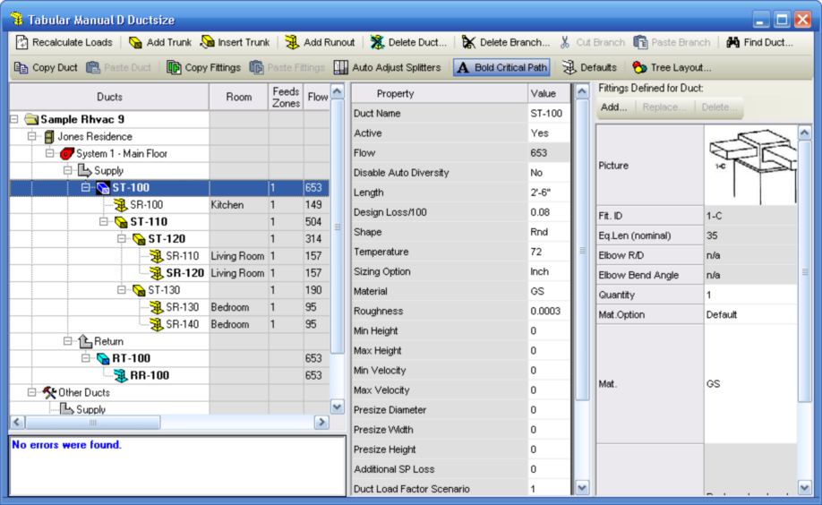

Tabular Manual D Ductsize (Project Menu) |
  
|
Tabular Manual D Ductsize (Project Menu) |
|
Icon:  . Keyboard Shortcut: ALT, P, A Also see the Duct Sizing Overview topic.
. Keyboard Shortcut: ALT, P, A Also see the Duct Sizing Overview topic.
Opens the Tabular Manual D Ductsize window, which lets you design duct systems using a tree outline. Scroll down below the below image for more information.

General Operation
The Tabular Manual D Ductsize window lets you create one or more duct systems for the HVAC systems in your project that you have defined on the System Data window. A system node  will be added to the tree for each system you have created. To begin adding ducts to a system, right click on the Supply node
will be added to the tree for each system you have created. To begin adding ducts to a system, right click on the Supply node  that is directly under the system node. The first duct you create must be a trunk, then you can create more trunks and runouts.
that is directly under the system node. The first duct you create must be a trunk, then you can create more trunks and runouts.
Left Section
The duct systems are all displayed on the tree grid on the left side of this window. The tree grid shows you how all the ducts are connected to each other. Below the tree grid is an evaluation of all the duct systems. Any problems in your data will be reported in the little, white box below the tree. If there are no errors the box will say, "No errors were found."
Middle Section
When you click on a system node , a trunk node  , or a runout node
, or a runout node  in the tree, the middle section displays a list of properties that you may set for that item. The property values are shown with a white background in the Value column. For example, the property named Material lets you select from a list of duct materials (How to add duct materials to the dropdown help list.).
in the tree, the middle section displays a list of properties that you may set for that item. The property values are shown with a white background in the Value column. For example, the property named Material lets you select from a list of duct materials (How to add duct materials to the dropdown help list.).
Right Section
When you select either a trunk node  , or a runout node in the tree, you may also add fittings using the "Fittings defined for duct" grid on the right section of this window. Click Add, Replace or Delete to edit the fittings defined for the currently selected duct. Here are explanations for some of the rows in the fittings grid:
, or a runout node in the tree, you may also add fittings using the "Fittings defined for duct" grid on the right section of this window. Click Add, Replace or Delete to edit the fittings defined for the currently selected duct. Here are explanations for some of the rows in the fittings grid:
Eq.Len, nominal [range]: Shows the nominal equivalent length of the fitting, or the possible range of nominal equivalent lengths, such as for fittings in Group 2.
Eq.Len, nominal [specific]: For fittings with a range of nominal equivalent lengths, shows the nominal equivalent length determined for the current fitting on the current duct. For other fittings, shows the nominal equivalent length.
Eq.Len, calculated: Shows the specific nominal equivalent length after it has been adjusted using the formula given in the topic, Equivalent Length of Fitting.
Toolbar
The toolbar at the top of this window begins with the "Recalculate Loads" button. The buttons in this toolbar let you add and remove ducts, set defaults, etc.. When you right click on a trunk node or a runout node, a subset of the toolbar buttons will be displayed in a popup menu.
Toolbar Buttons
Recalculate Loads: Performs a recalculation of the project and updates the results based on any changes you may have made on other project windows while the Tabular Manual D Ductsize window was open. It is not necessary to click this button unless you have changed something on another project window, since all changes you make on the Tabular Manual D Ductsize window itself are immediately accounted for in the results this window displays.
Add Trunk: Adds a new trunk duct below the currently selected node. The current node must be either a Supply node , a Return node , a trunk node , or the Individual Ducts node for this button to be enabled.
Insert Trunk: Adds a new trunk directly above the currently selected duct. The current node must be a trunk or runout, and not in the Individual Ducts area in order for this button to be enabled.
Add Runout: Adds a new runout duct below the currently selected node. The current node has to be a trunk node  for this button to be enabled.
for this button to be enabled.
Delete Duct: Deletes the current duct from the project. If it is a trunk duct, any ducts directly below the deleted duct will be reconnected to its upstream trunk.
Delete Branch: Deletes the current trunk and all ducts downstream of it.
Cut Branch: Marks the current trunk as being in a state of being "cut" to the clipboard, so that you may then paste it and all ducts under it underneath a different trunk elsewhere in the same system. This button is only enabled when the current node is a trunk, and is not the main trunk, and is not within the Individual Ducts area. When you use this function the "cut" trunk's icon changes to this image to show that the trunk is ready to be pasted elsewhere in the same system.
Paste Branch: Moves the trunk that you had previously marked as being "cut" with the Cut Branch function underneath the current trunk. Any ducts underneath the "cut" trunk are also moved with it.
Find Duct: Opens the Find Duct window, which lets you search for a duct by name.
Copy Duct: Copies the currently selected trunk or runout to the clipboard. All property values as well as the fitting selections are then ready to be pasted into another duct of the same kind (you can only copy and paste from trunk to trunk and from runout to runout).
Paste Duct: Pastes the data from a duct copied to the clipboard earlier into the current duct of the same kind. You can only copy and paste from trunk to trunk and from runout to runout. Fitting data from the copied duct is included.
Copy Fittings: Copies only the fittings of the currently selected trunk or runout to the clipboard. The fittings are then ready to be pasted into any other duct.
Paste Fittings: Pastes the fittings into the current duct that were copied to the clipboard earlier using the Copy Fittings function.
Note: The clipboard for the Copy Duct and Paste Duct functions is separate from the clipboard used for the Copy Fittings and Paste Fittings functions.
Auto Adjust Splitters: When in the pressed down state, makes it so the vertical splitter bars that separate the left, middle and right sections of this window are automatically adjusted to allow all of the fitting and property information for the currently selected duct to show. This is a toggle button that stays either pressed down or unpressed.
Bold Critical Path: When in the pressed down state, sets the font to bold for each duct along the path that causes the most static pressure loss.
Defaults: Opens the "Tabular Manual D Ductsize Defaults" dialog, which lets you set default property values for new ducts, as well as set multiple properties for multiple existing ducts.
Tree Layout: Opens the "Tabular Manual D Ductsize Layout" dialog, which lets you select which columns to show just to the right of the duct tree list. These columns include things such as duct lengths, the room a runout feeds, cumulative static pressure losses, etc..